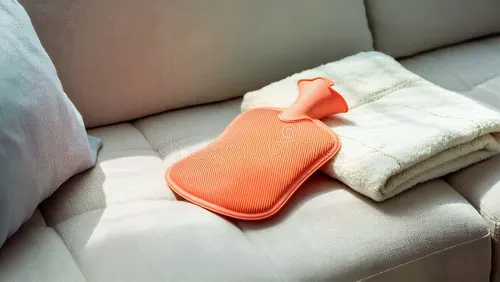

Warm Compress
Apply heat to the lower abdomen to relieve cramps.
Natural tips, quick relief tactics and gentle rituals to help ease period symptoms — curated with care and energy.
Tap a card to learn quick actions and view examples.
Practical and gentle practices to try today.
Apply heat to the lower abdomen to relieve cramps.
Try child's pose, cat-cow and supine twists to ease tension.
A warm cup of chamomile can soothe cramps and help sleep.
Keep fluids up to reduce bloating and headaches.
Almonds, dark chocolate and bananas can ease muscle tension.
Fennel tea can reduce cramps and digestive upset.
Short naps can aid recovery and reduce pain sensitivity.
A few drops of lavender oil can reduce perceived pain and stress.
Have a natural tip we should include? Share it below — saved locally for review.